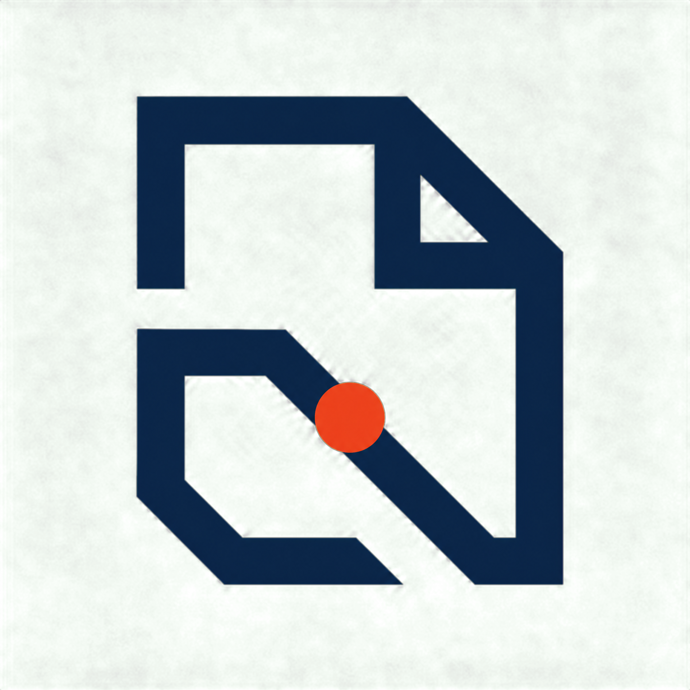

把碎片整理成可被看見的路徑。
從一個版面的草圖、幾行還沒寫完的程式，到一段想保留下來的光線。這裡收錄正在進行中的頁面，而不是完成後才回頭整理的履歷。

NASH / FIELD NOTESSHORT INTRODUCTION
一個從 GitHub 長出來的個人檔案。它收集正在搭建的網頁、留在硬碟裡的照片，以及還沒有完全想清楚、但值得先寫下來的方向。
THINGS I AM MAKING
從一個版面的草圖、幾行還沒寫完的程式，到一段想保留下來的光線。這裡收錄正在進行中的頁面，而不是完成後才回頭整理的履歷。
VISUAL FIELD NOTES
照片先進 assets/images/，圖說再慢慢補上。每一張影像都可以是下一個 HTML 頁面的開頭。
EDIT. COMMIT. PUBLISH.
在 GitHub 網頁中編輯 index.html，或上傳新的 HTML 頁面。
把照片上傳到 assets/images/，再將圖片路徑填入頁面。
按下 Commit changes。網站會在背景自動更新，不需要手動執行任何指令。
06 / MARGIN NOTE — OPEN
這份檔案的原稿公開放在 GitHub。你可以從程式、提交紀錄與下一次更新，讀到它正在往哪裡走。